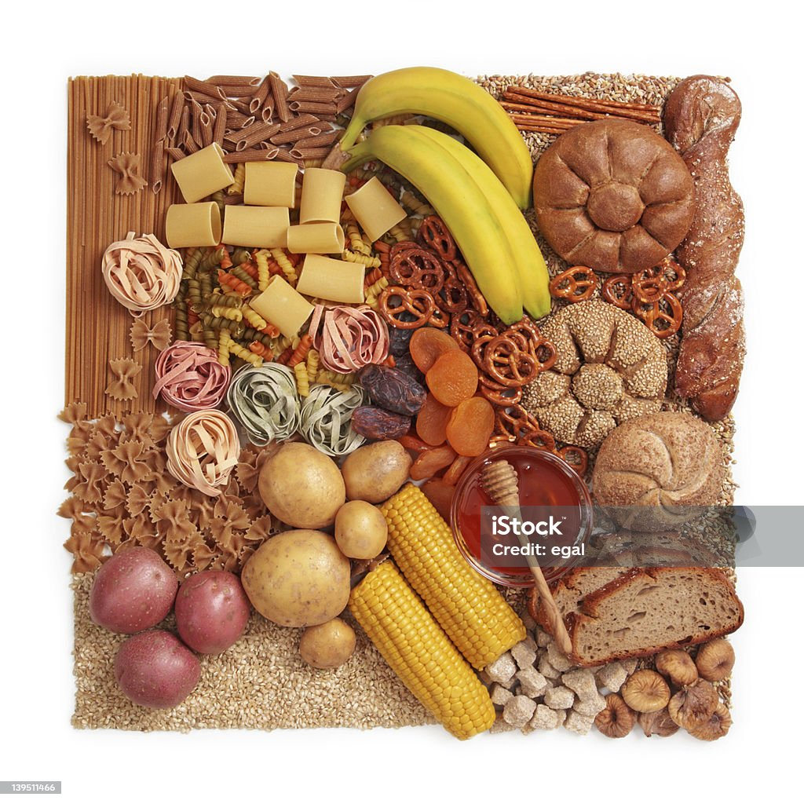

https://www.istockphoto.com/es/foto/carbohidrato-gm139511466-19277879
Los Hidratos de Carbono también se llaman azúcares o carbohidratos.
Están compuestos de C, H y O y son solubles en agua. Deberían representar el 60% de nuestra ingesta diaria. Desde el punto de vista nutricional, se dividen en dos grupos.
- Disponibles: Los carbohidratos son la fuente de energía del cuerpo y aportan 4 kcal por gramo. Según su complejidad, se pueden clasificar en las siguientes categorías:
- Monosacáridos: los más importantes son la glucosa y la fructosa (presente en muchas frutas).
- Disacáridos: Los más importantes son la lactosa, que se encuentra en la leche, y la sacarosa, en el azúcar que usamos en la cocina.
- Polisacáridos: Destacan el almidón (que se encuentra en los alimentos vegetales) y el glucógeno (que se encuentra en los alimentos animales). La mayoría de los carbohidratos se absorben en forma de almidón. El cuerpo los almacena en forma de glucógeno en el hígado y los músculos. Cuando los alimentos aportan más que la ingesta, se almacenan como grasa en el tejido adiposo.
- No disponible: Representa la fibra. Está formado por muchas moléculas que las enzimas digestivas no pueden descomponer, como la celulosa y la pectina (polisacáridos) que se encuentran en las paredes celulares de los vegetales. Los efectos que provocan en nuestro organismo son una mayor retención de agua en las heces, un aumento de la motilidad intestinal y, por tanto, un aumento de la tasa de transporte fecal. Comer suficiente fibra reduce el riesgo de enfermedades como cáncer de colon, estreñimiento y hemorroides.